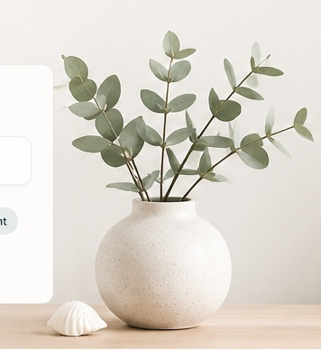

Anchored Inside
The Toolkit
Practical tools for healing, growth,
and connection.
Browse therapist-created handouts, visual guides, and skill-building resources designed to support children, teens, adults, parents, couples, and helping professionals.
What would feel helpful today?
Popular:

Browse all tools
Build your toolkit.
No tools found
Try a broader search or clear your filters.
A gentle note
Tools can support the work. They do not have to replace support.
These resources are educational and are not a substitute for individualized mental health care, diagnosis, or crisis support. Choose what feels useful, move at your own pace, and reach out for professional support when needed.
Toolkit preview